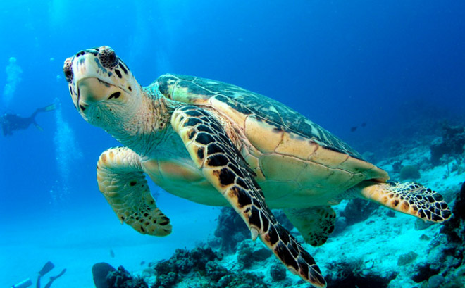

México se distingue como uno de los 17 países mega diversos, al encontrarse entre los primeros lugares de las listas relacionadas con la riqueza de especies. Con tan sólo el 1.5 por ciento de la superficie del planeta, nuestra nación alberga el 12 por ciento de la biodiversidad que existe a nivel mundial y prueba de ello es que ocupa el segundo lugar en reptiles; el tercer sitio en mamíferos; el octavo lugar en aves; y el quinto en plantas vasculares.
